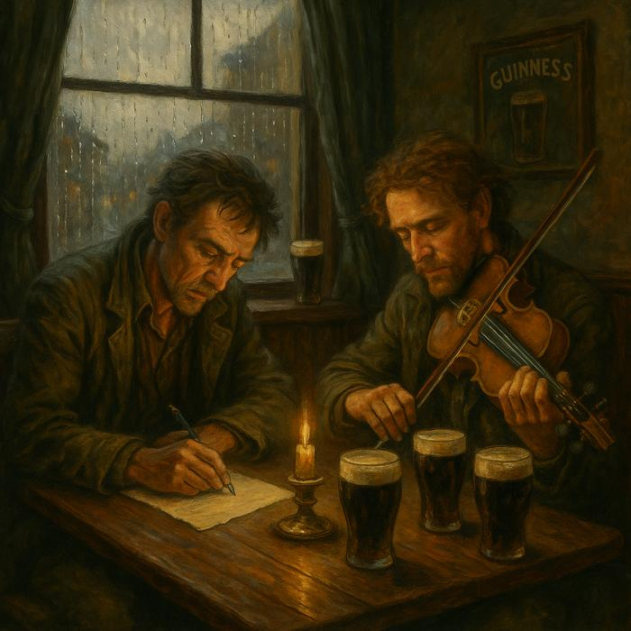
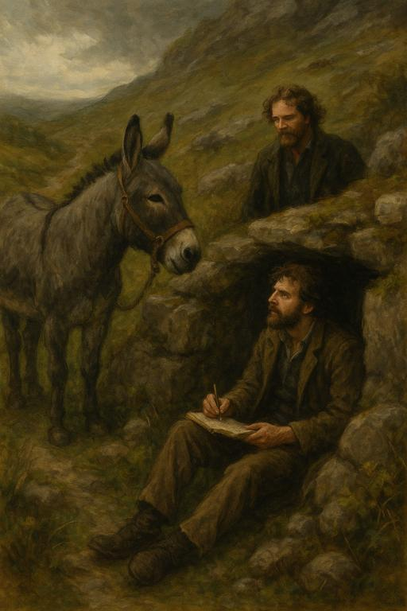
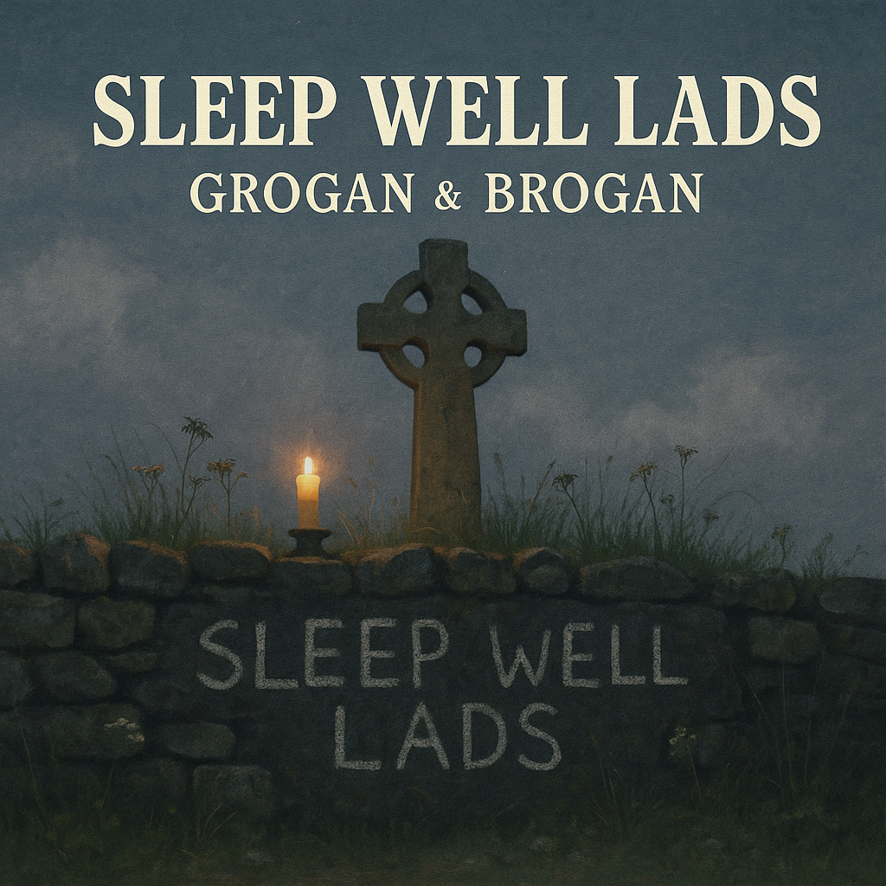

🎻 The Ballad of the Unwritten Song
A Grogan & Brogan Short Story
The rain hadn’t let up for three days in Clifden, and the pub windows sweated harder than the men inside. A slow session simmered by the fire — fiddle, whistle, the odd guitar — but in the back corner, two men huddled in what looked more like a crisis summit than a jam.
Grogan, all bone and wiriness, jabbed a biro at a sheet of paper.
“No, no, no, Brogan — it’s ‘the donkey brayed thrice,’ not twice. The whole rhythm falls apart otherwise.”
Read more🌈 Rainbow, Muse of the West
A Grogan & Brogan Short Story
It began with a bet in a pub in Letterfrack.
Grogan was arguing, as usual, that inspiration came from the dead: famine ghosts, vanished kingdoms, the lost sons of Erin. Brogan disagreed — also as usual.
“No, Hagar,” he said, slapping his pint down. “The muse is alive. Has teeth. Eats hay.”
Read more🕯 The Disappearance of Grogan (and the Donkey Who Found Him)
A Grogan & Brogan Short Story

It happened during the Ballyvaughan Folk Festival — the year the stage collapsed, the soup turned, and a céilí dancer got possessed (mildly).
Grogan had been in rare form: quoting Joyce in Finnish, reciting a thirty-eight verse poem to a tin of sardines. Then, after their midnight set — a haunting new arrangement of “The Gypsy Rover” featuring Rainbow on backing vocals (read: braying) — Grogan vanished.
Brogan checked the pubs. The chip van. The confession box. Nothing.
Read more🕯 The Wake by the Stone Wall
A Grogan Story, Inspired by “Sleep Well Lads”
They came one by one to the old stone wall — not by invitation, but instinct.
Brogan had seen the notice in the Connacht Tribune:
Commemorative gathering for the unnamed boys of St. Dymphna’s Industrial School. Bring nothing but memory.
Read more🧳 The Letter to Agnes
A Grogan Story, based on “England”

The letter was folded into eighths and smelled faintly of damp turf and tobacco. Agnes O’Shea found it in the pocket of an old peacoat, left behind in the upstairs room of the O’Driscoll farm where the workers used to board. She hadn’t opened that wardrobe in years.
It was addressed, simply:
“To Agnes, if you ever still think of me.”
Read more🕯 The Hollow Glen
A Grogan & Brogan Short Story, based on “The Power of the Child Over Me”

They had never played that song live.
Not once.
Not at Doolin. Not at Ballyshannon. Not even at the Olympia, where the crowd had begged for it by name. Grogan would just shake his head. Brogan would change the subject. And Rainbow the donkey, now half-retired and grazing in the fields beyond Clifden, would let out a soft, mournful bray, as if remembering something too.
Read more🍷 The Gospel of the Bottle
A Brogan-Led Tale, Based on “The Drunken Paddy Reincarnated”

When Brogan declared himself the Second Coming of the Drunken Paddy, Grogan assumed it was another one of his seasonal breakdowns. The kind that followed long tours, too much porter, and the occasional run-in with the Revenue Commissioners.
But this was different.
He showed up to rehearsal barefoot, with a staff made of driftwood, wearing a bedsheet robe dyed with beetroot.
Read more⛪ The Day Jesus Got Punched
A Grogan & Brogan Story, Based on “The Mad Priest of Ballynahinch”

Ballynahinch had two constants: drizzle, and Father Jeremiah Quinn.
Nobody could agree if the priest had lost his marbles or simply exchanged them for a higher set of visions. Either way, he was a fixture — shouting Latin into the river, blessing tractors, and once trying to exorcise a bodhrán player mid-jig.
When Grogan & Brogan came to town, they intended to avoid him.
Read more🌊 The Curragh That Never Returned
A Grogan Story, Inspired by “Lost at Sea”

The bottle washed ashore in Ballycroy two weeks after the storm.
An old man found it — combing the rocks for driftwood — and brought it to the pub like a relic. Inside was a scroll of waterproofed paper, curled like a sleeping child.
Grogan happened to be there. He read it aloud without knowing why.
Read more🍯 The Ballad of Pooh MacDonagh
A Grogan & Brogan Story, Based on “The Irish Winnie the Pooh”

It began with a headline in The Leitrim Echo:
RURAL CLERGYMAN ACCUSES CARTOON BEAR OF HERESY
Brogan nearly choked on his porridge.
Grogan, skimming the article, murmured: “Apparently the bear is living in a hollow tree behind the sacristy and giving out unsolicited advice.”
Read more🧀 The Ballyloughlin Infestation Scandal
A Grogan & Brogan Satirical Story, Based on “Rodent in the Lunchbox”

It all started with a sandwich.
Tuesday morning. St. Ursula’s National School. Little Declan O’Murchú opened his lunchbox to find, nestled between a squashed cheese string and a bruised banana...
…a rodent.
Read more🧦 The Gift That Didn’t Fit
A Grogan & Brogan Story, Based on “Socks from Dad”

It was Christmas Eve in Castlebar. A grey slush coated the streets, and the pub smelled like regret and stale turkey crisps.
Grogan was nursing a hot whiskey. Brogan had tied tinsel to Rainbow’s ears and was busking “The Wren Song” outside for coins and spiritual fulfilment.
A man approached them — short, square-shouldered, with the haunted eyes of a man who’d read one too many self-help books.
Read more🌹 The Fair at Ballymahone
A Grogan & Brogan Love Story, Based on “Roses and Poitín”

They met at the fair.
It was the kind of fair where you could buy a goat, a hurley, a tin whistle, and a third-hand philosophy degree — all before lunch.
Grogan had been up all night composing a poem about mud. Brogan had lost his shoes in a wager involving a tin of mushy peas.
Read more🍺 The Day Grogan Went to Grogan’s
A Story of Dublin, Destiny, and Drink

Grogan didn’t plan to go to Grogan’s that day — but then again, he rarely planned anything.
It was a Thursday in March, the kind of day when the Liffey sulks and the gulls heckle passers-by.
He’d come up from Ballymahone chasing a rumour — and possibly running from a woman named Deirdre.
Read more